Wan2.2 完全拆解
Wan2.2 完全拆解：那个"MoE"其实是两份完整权重在时间轴上换班
调研对象：
https://github.com/Wan-Video/Wan2.2（本地 checkout：Wan2.2/） 调研方式：离线，全部结论来自仓库文件内容与git命令输出；参数量是把源码 import 到torch.device('meta')实测求和得到的，不是抄 README。撰写日期：2026-11-08（Asia/Shanghai）。 引用约定：文件路径:行号。仓库没写的，标注 「仓库未说明」。
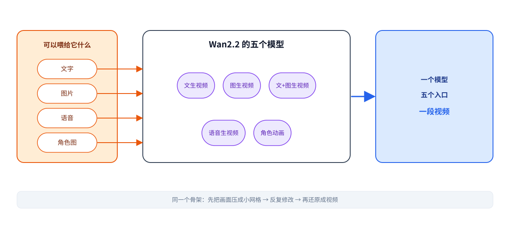
图 1｜Wan2.2 是什么 —— 看这里：左边是五个模型（两个 14B 的大块、三个小的），右边是它们各自能干的事。中间那条橙色的箭头是重点：写一句话，出一段视频；而"图生视频""语音生视频""角色动画"只是把左边的输入换掉。
结论 / Conclusion
Wan2.2 是阿里通义万相（Wan）团队的 2.2 代代码库：87 个文件、57 个 Python 文件、19,138 行代码，Apache-2.0 许可，是这一代最完整、最能读懂的开源视频生成实现之一。
但它最反直觉的一点是：A14B 的"MoE"根本不是稀疏混合专家。它没有 router、没有 token 级路由——它是两份各自完整的 40 层模型权重（高噪专家 / 低噪专家，各 14.29B 参数），在去噪时间轴的 t = 875 处整模型换班，并且伴随一次 CPU↔GPU 的权重搬运。
第二个反直觉：A14B 的采样步数不是"50 步高噪 + 10 步低噪"。按代码复算调度器时间表，T2V-A14B 的 40 步实际是 26 步高噪 + 14 步低噪（shift=12.0），I2V-A14B 是 15 + 25（shift=5.0）——shift 参数越大，切得越早。
第三个：图生视频不用 CLIP。A14B-I2V 是把「噪声 16 通道 + mask 4 通道 + 首帧 latent 16 通道」直接拼成 36 通道喂进 DiT；CLIP 只在 Animate（角色动画）里出现。
技术版 / Technical
- 身份：
main分支，HEAD1ea34ff48f87168174e12956e200b1d908b1c5ff（2026-09-21 14:16:22 +0800），shallow clone 仅 1 个 commit，历史不可查。License = Apache 2.0（LICENSE.txt）。87 个 tracked 文件：57 个.py（19,138 行） + 18 个媒体 + 文档。 - 实测参数量（
torch.device('meta')实例化后逐参数numel()求和）：T2V-A14B 单专家 14,288,491,584；I2V-A14B 14,288,901,184（in_dim=36）；TI2V-5B 4,999,787,712（正好 5.00B）；S2V-14B 16,925,024,089；Animate-14B 17,274,816,884。README 说双专家共 27B，推导为 28.58B。 - 核心形状（T2V-A14B @1280×720×81）：像素
81×720×1280×3→ VAE(4×8×8) → latent(16,21,90,160)→ patch(1,2,2) → S = 75,600 token，D=5120 / 40 头 / head_dim=128 / 40 层。 - 单层参数分解（A14B）：self-attn 104,888,320 + cross-attn 104,888,320 + FFN 141,576,704 + modulation 30,720 + norm 10,240 = 351,394,304，×40 = 14.06B（占 98.4%）。
- 3D RoPE 频率分配：
freqs.split([c-2*(c//3), c//3, c//3])= [22, 21, 21] / 64 → 时间 F 34.4%、高 H 32.8%、宽 W 32.8%。 - 注意力后端：只有 FlashAttention-3 → FlashAttention-2，主干不走 SDPA；
assert q.device.type == 'cuda' and q.size(-1) <= 256（wan/modules/attention.py:54）→ 纯 CPU 无法推理，head_dim 必须 ≤ 256。仓库无 SageAttention、无 fp8 路径。
一、仓库地图
傻瓜层： 这是一个"能跑起来"的开源实现：五个模型、六个 Python 入口脚本、完整的 VAE + DiT + 条件编码 + 分布式训练框架（推理用），但没有一行训练代码。
技术版 / Technical
顶层结构（87 个 tracked 文件，全部读过）：
| 路径 | 作用 |
|---|---|
README.md |
仓库主页：模型时间线、能力矩阵（文/图/音频/角色）、多卡安装与运行、致谢 |
INSTALL.md |
安装细节、flash-attn 编译问题 |
LICENSE.txt |
Apache 2.0 |
Makefile |
只有 format 一条目标（black/isort），没有任何训练或构建目标 |
generate.py |
统一 CLI 入口：解析参数 → 校验 → 按 task 分发到 pipeline |
pyproject.toml / requirements*.txt |
依赖；requirements.txt:6 把 transformers 钉在 <=4.51.3 |
wan/ |
主包（57 个 py 文件中的绝大部分） |
wan/configs/*.py |
5 份任务配置 + 1 份共享配置（全部是 Python EasyDict，仓库里没有一个 YAML） |
wan/modules/model.py |
DiT 主干（546 行）：WanModel / WanAttentionBlock / 自注意力 / 交叉注意力 / 3D RoPE |
wan/modules/vae2_1.py |
Wan2.1-VAE（663 行）：4×8×8，z=16 |
wan/modules/vae2_2.py |
Wan2.2-VAE（1051 行）：4×16×16，z=48 |
wan/modules/attention.py |
FlashAttention 封装与 SDPA 兜底（179 行） |
wan/modules/t5.py |
umT5-XXL 文本编码器（513 行） |
wan/modules/tokenizers.py |
HuggingFaceTokenizer 包装（82 行） |
wan/modules/s2v/ |
语音到视频：辅助块、音频编码器、face adapter |
wan/modules/animate/ |
角色动画：姿态编码、face 块、CLIP 封装、预处理管线 |
wan/distributed/ |
FSDP、DeepSpeed-Ulysses 序列并行、工具函数 |
wan/text2video.py / image2video.py / textimage2video.py / speech2video.py / animate.py |
五个任务 pipeline（378 / 431 / 619 / 706 / 648 行） |
wan/utils/ |
fm_solvers_unipc.py（UniPC）、fm_solvers.py（DPM++）、utils.py（保存/合并音频）等 |
examples/ |
12 个示例素材（MP3、PNG、JPG、MP4、wav） |
tests/ |
test.sh + README（没有 pytest 用例） |
assets/ |
5 张说明图：moe_2.png（SNR 切换示意）、moe_arch.png、vae.png、performance.png、comp_effic.png |
二、五个模型：一张表看完
傻瓜层： 三个小模型各管一件事，两个 14B 大模型管主力任务。名字里的"A"是 advanced，"B"是 billion。
技术版 / Technical
| 模型 | 实测参数量 | 任务 | 结构 | 分辨率 / 时长 | 实现 |
|---|---|---|---|---|---|
| T2V-A14B | 14,288,491,584（单专家） | 文本→视频 | MoE 双专家（高噪/低噪各一份 14B，总 28.58B，每步激活 14B） | 480P(832×480)、720P(1280×720)；默认 81 帧 @16fps（≈5.06s） | wan/text2video.py |
| I2V-A14B | 14,288,901,184（in_dim=36） | 图片→视频 | MoE 双专家 | 同上；输出宽高比随输入图 | wan/image2video.py |
| TI2V-5B | 4,999,787,712 | 文本+图片→视频（统一框架） | Dense 单模型 | 仅 1280×704（注意不是 720）；默认 121 帧 @24fps（≈5.04s） | wan/textimage2video.py |
| S2V-14B | 16,925,024,089 | 语音→视频（+姿态驱动） | Dense 单模型 | 480P/720P 等 8 种；每段 infer_frames 默认 80（须 4 的倍数）@16fps |
wan/speech2video.py |
| Animate-14B | 17,274,816,884 | 角色动画 / 角色替换 | Dense 单模型 | 720P；每段 clip_len = 77 帧 @30fps |
wan/animate.py |
命名注意：
Animate-14B和S2V-14B名字里的 "14B" 指的是骨干 Wan2.1-14B 级别，但实测代码里的 DiT 参数量分别是 17.27B 与 16.93B——因为额外挂了 face adapter（2.52B 级别的音频注入器 / face adapter）。【推导】
各任务的采样设置（wan/configs/*.py）：
| 任务 | 步数 | shift | CFG | 边界 t | 高噪步 / 低噪步 |
|---|---|---|---|---|---|
| T2V-A14B | 40 | 12.0 | 低噪 3.0 / 高噪 4.0 | 875 | 26 / 14 |
| I2V-A14B | 40 | 5.0 | 3.5 / 3.5 | 900 | 15 / 25 |
| TI2V-5B (t2v) | 50 | 5.0 | 5.0 | — | — |
| TI2V-5B (i2v) | 50 | 5.0 | 5.0 | — | — |
| S2V-14B | 40 | 3.0 | 4.5 | — | — |
| Animate-14B | 20 | 5.0 | 1.0 → 默认不做 CFG | — | — |
三、端到端数据流：一张图看懂 81 帧是怎么变成视频的
傻瓜层： 视频进来先被"压缩"成一个很小的数学网格，模型在那上面反复改，最后再"解压"回视频。
技术版 / Technical
以 T2V-A14B，1280×720，81 帧为例（wan/text2video.py:252-368）：
| 阶段 | 张量 | 数字从哪来 |
|---|---|---|
| 像素输入 | [81, 720, 1280, 3] |
用户设定（frame_num=81，size=1280*720） |
| VAE 编码 | → latent [16, 21, 90, 160] |
stride (4,8,8)：F'=(81-1)//4+1=21，H'=720//8=90，W'=1280//8=160，z_dim=16 |
| patchify | Conv3d(16→5120, kernel=(1,2,2), stride=(1,2,2)) |
wan/modules/model.py:378-379 |
| token 网格 | 21 × 45 × 80 |
空间被 2×2 patch 化 |
| token 序列 | S = 21×45×80 = 75,600 | text2video.py:257-259 的 seq_len 公式一致 |
| 隐向量 | D = 5120 | dim=5120 |
| 注意力 | 40 头 × head_dim 128 | d = D/N = 5120/40 |
| Q/K/V | [1, 75600, 40, 128] |
x.view(b,s,n,d) |
| RoPE 频率表 | [1024, 64] 复数（22+21+21 段） |
model.py:400-405 |
| 文本上下文 | [1, 512, 5120] |
umT5-XXL → Linear(4096→5120)→GELU→Linear(5120→5120) |
| 调制向量 | [1, S, 6, 5120] |
time_projection: SiLU→Linear(D, 6D) → unflatten(2,(6,D)) |
| 输出头 | [1, 75600, 64] → unpatchify → [16, 21, 90, 160] |
nn.Linear(D, out_dim·prod(patch_size)) |
| VAE 解码 | → [81, 720, 1280, 3] |
rank0 执行 vae.decode(x0)（text2video.py:368） |
TI2V-5B 对照（1280×704×121）：VAE stride (4,16,16)、z=48 → latent (31,48,44,80) → patch 网格 31×22×40 → S = 27,280（约为 A14B 720p 的 1/2.77），D=3072 / 24 头 / 30 层。
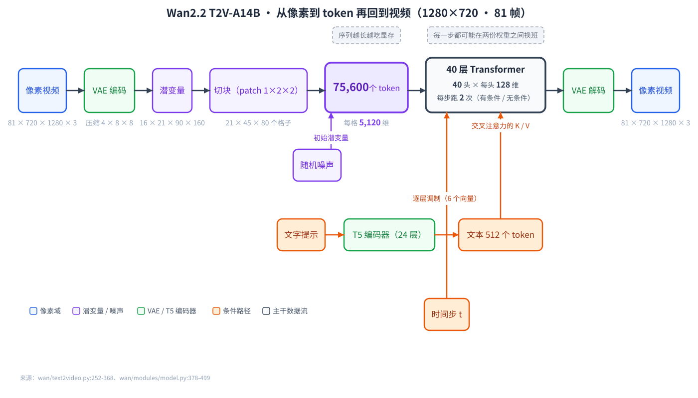
图 2｜Wan2.2 的端到端数据流 —— 看这里：蓝色的方块是视频数据本身（81×720×1280×3 → 16×21×90×160 → 75,600×5120），橙色方块是条件（文本走 T5，图片直接拼通道），紫色是时间步。注意从 latent 到 token 这一步，空间被 2×2 patch 化、时间没动。
四、一个 Transformer Block 里面长什么样
傻瓜层： 每一层做三件事：先自己看自己、再听文本、最后过一遍 FFN。时间和文本以"调节旋钮"的形式插进来。
技术版 / Technical
Wan2.2 是单流 DiT（不是 Flux/SD3 那种双流），WanAttentionBlock（wan/modules/model.py:183-259）内部顺序：
norm1（LayerNorm，elementwise_affine=False）→self_attn（3D RoPE + FlashAttention）- 残差
x = x + y * e[2] norm3（LayerNorm，elementwise_affine=True）→cross_attn（文本 K/V）- 残差
x = x + cross_attn(...) norm2→ffn（Linear→GELU(tanh)→Linear）→ 残差x = x + y * e[5]
AdaLN 调制（:217, 243-255）：每个 block 有一份 nn.Parameter(randn(1,6,D)/√D)，与时间步 embedding 相加后切成 6 段：
| 调制向量 | 去处 |
|---|---|
e[0], e[1] |
self-attn 的 shift / scale |
e[2] |
self-attn 残差门 |
e[3], e[4] |
FFN 的 shift / scale |
e[5] |
FFN 残差门 |
所有调制计算都在 torch.amp.autocast('cuda', dtype=torch.float32) 下进行（:238,246,254），保证 fp32 精度。
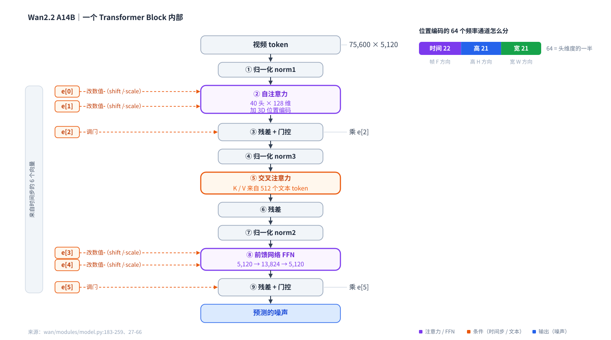
图 3｜单个 Block 的层序与调制去向 —— 看这里：左边橙色的六个 e[0..5] 是时间步投影出来的调制向量，它们分别进入 shift/scale（作用在归一化之后） 和 残差门（作用在残差支路上）。右上的 22 / 21 / 21 是 3D RoPE 把 64 个频率通道分给「时间 / 高 / 宽」三轴的比例。
3D RoPE 细节（model.py:27-66, 400-405）：
rope_params(max_seq_len=1024, dim, theta=10000)→ 复数频率表[1024, dim/2]- 三段：
rope_params(1024, d - 4*(d//6))+2*(d//6)+2*(d//6) rope_apply中c = head_dim//2 = 64，split([c-2*(c//3), c//3, c//3]) = [22, 21, 21]- A14B：d=128、d//6=21 → 时间 F 占 22/64 = 34.4%，高 H 21/64 = 32.8%，宽 W 21/64 = 32.8%（时间略多，符合视频时空 RoPE 的常见配比）
- 全程 float64 复数运算再
.float()；序列并行版本另有pad_freqs补齐（wan/distributed/sequence_parallel.py:10-20, 52-55）
注意力后端（wan/modules/attention.py:24-130）：
flash_attention()顺序：flash_attn_interface（FA3，若安装）→flash_attn（FA2）→ 断言失败- 全部走
flash_attn_varlen_func+cu_seqlens变长打包 - FA3 不支持
dropout_p与window_size（:95注释） - SDPA 兜底路径存在，但主干
WanSelfAttention直接调用flash_attention不会走 SDPA；SDPA 只被wan/modules/s2v/auxi_blocks.py与wan/modules/animate/face_blocks.py使用
窗口与因果性：window_size = (-1,-1) 出现在全部 5 个 config → 全局注意力、无滑动窗口；causal 默认 False → DiT 自注意力是非因果的全注意力。唯一因果的是 VAE 的 CausalConv3d（时间维只左 padding）。S2V 的因果性来自结构分段（seg_idx 把 token 切成生成段 / 参考+动作段）而非 mask。
五、MoE 真相：两份权重，在时间轴上换班
傻瓜层： 名字叫"混合专家"，实际是"高噪阶段用一套网络、低噪阶段用另一套网络"。不是 router 逐 token 选路，而是整网替换。
技术版 / Technical
README 的说法（assets/moe_2.png 画的 SNR 曲线）：在 t_moe（SNR = SNR_min/2 处）切换专家。
代码里的实现是另一种形态：
- 加载：两份完整独立的
WanModel权重（low_noise_model/high_noise_model两个 checkpoint 子目录，wan/text2video.py:101-117） - 切换：
wan/text2video.py:169-201的_prepare_model_for_timestep()——if t.item() >= boundary: 用 high_noise_model else low_noise_model，并把不用的那份.to('cpu')（offload 模式） - 边界：
boundary = self.boundary * self.num_train_timesteps（:306），num_train_timesteps = 1000→ T2V 875、I2V 900 - 每个专家都是完整的 40 层，不存在"专家边界在第 N 层"
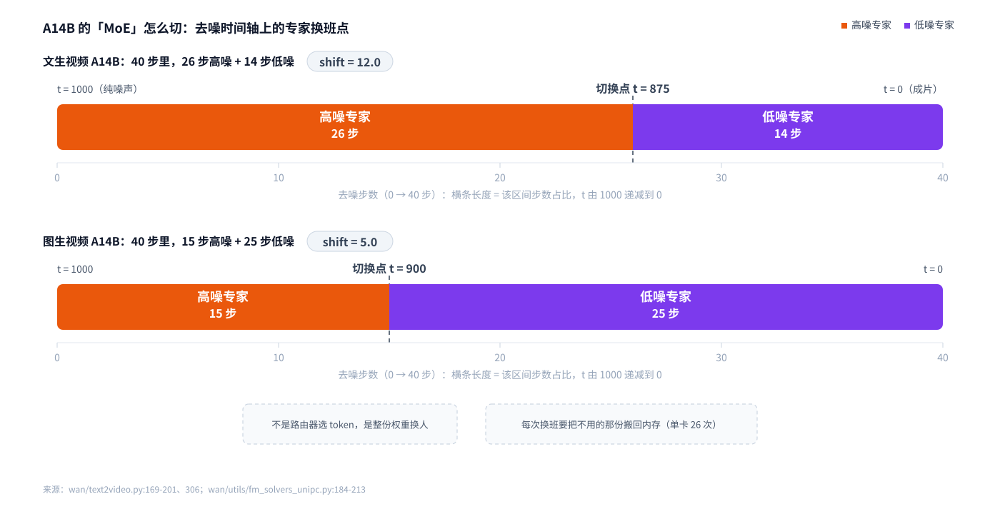
图 4｜时间轴上的换班点 —— 看这里：横轴是 40 步去噪从 t=1000 走到 t=0，纵轴标出两个专家各自负责的区间。T2V-A14B 在 t=875 处换班（高噪 26 步、低噪 14 步），I2V-A14B 在 t=900 处换班（15 步 / 25 步）。shift 越大，切得越早——这正是 A14B 与 5B 步数分配不同的原因。
逐步时间表（复算 wan/utils/fm_solvers_unipc.py:184-213：σ = linspace(1,0,steps+1)[:steps]，σ' = shift·σ/(1+(shift-1)σ)，t = (σ'·1000).astype(int64)）：
- T2V-A14B（shift=12.0，边界 875）：
[1000, 997, 995, 993, 990, 988, 985, 982, 979, 976, 972, 969, 965, 961, 957, 952, 947, 941, 936, 929, 923, 915, 907, 898, 888, 878, | 865, 852, 837, 819, 800, 776, 750, 717, 679, 631, 571, 493, 387, 235]（竖线左侧 26 步走高噪专家，右侧 14 步走低噪专家） - I2V-A14B（shift=5.0，边界 900）：
[1000, 994, 989, 984, 978, 972, 965, 959, 952, 945, 937, 929, 921, 912, 902, | 892, 882, 871, 859, 846, 833, 818, 803, 787, 769, 750, 729, 706, 681, 654, 625, 592, 555, 514, 468, 416, 357, 288, 208, 113]
CFG 也随专家切换：sample_guide_scale = guide_scale[1] if t >= boundary else guide_scale[0]。
单卡场景的隐藏成本：每次切换伴随 CPU↔GPU 搬运，T2V 单卡要搬 26 次、I2V 15 次。这是 A14B 单卡远慢于 5B 的原因之一。
仓库自带的 SNR 切换示意图（原图，未改动）：
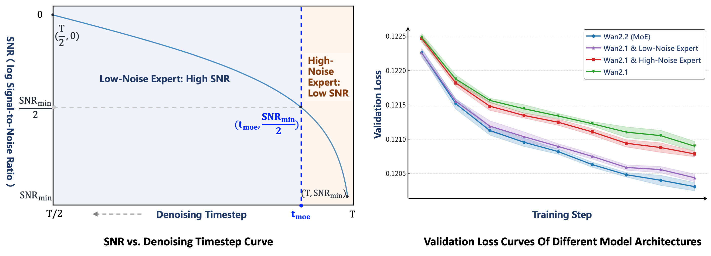
图 5｜官方示意图 —— 看这里：上半部分是 SNR 曲线与 t_moe 的交点，下半部分是两条验证损失曲线。
六、条件是怎么进去的：三条不同的路
傻瓜层： 文本、图像、声音，进模型的方式完全不一样——文本走"旁门"（交叉注意力），图像直接拼进画面，声音在指定的层里"横插一脚"。
技术版 / Technical
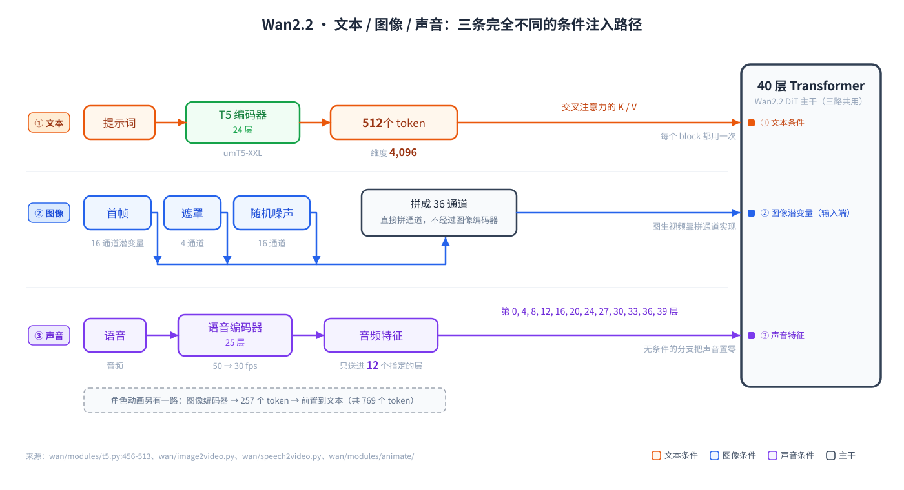
图 6｜文本 / 图像 / 音频的三条注入路径 —— 看这里：橙色是文本（走每个 block 的交叉注意力，K/V 来自 512 个文本 token）；蓝色是图像（不经过 CLIP，直接拼通道）；紫色是音频（只在 12 个指定层做 AdaLN + 音频交叉注意力）。
6.1 文本（所有任务共用）
- 编码器：
wan/modules/t5.py的T5EncoderModel，底层 umT5-XXL（encoder_only=True）（:456-469）：vocab 256384、dim 4096、dim_attn 4096、dim_ffn 10240、64 头、24 层 encoder、num_buckets 32 - 权重：
models_t5_umt5-xxl-enc-bf16.pth；tokenizer 取google/umt5-xxl - 分词：
padding='max_length', truncation=True, max_length=512（tokenizers.py:54-59）→ 超长 prompt 被直接截断 - 进入 DiT：
text_embedding = Linear(4096→D) → GELU(tanh) → Linear(D→D)（model.py:380-382），文本上下文补零到text_len=512 - 交叉注意力：Q 来自视频 token，K/V 来自文本（
model.py:158-180）；context_lens = None→ 文本侧不做 padding mask（已在 tokenizer 侧截断到真实长度） - 参数量 5,680,910,336【解析推导】（diffusers 未安装，用等价结构推导）
6.2 图像条件（A14B-I2V 与 Animate 的方式不同）
- I2V-A14B 不用 CLIP：
concat([noise(16ch), mask(4ch), VAE首帧(16ch)])= 36 通道，走in_dim=36；mask 通道告诉模型"首帧是已知的" - Animate 用 CLIP：open-clip（XLM-R + ViT-H/14，fp16）→
MLPProj(1280→5120)→ 257 个 token 前置到文本 context（总 769 token） - I2V 输出尺寸随输入图比例：
lat_h = round(sqrt(max_area·ar)//8//2×2)、lat_w = round(sqrt(max_area/ar)//8//2×2)（image2video.py:264-269）。16:9 输入 → 网格21×45×80、S=75,600；832×1104 竖图 → 网格21×75×57、S=89,775
6.3 音频条件（S2V）
- wav2vec2-large-xlsr-53，25 层 hidden 全部拼接
- 50 fps → 30 fps 插值 → 按 fps 分桶 →
CausalAudioEncoder层加权 - 注入位置：12 个指定层
[0,4,8,12,16,20,24,27,30,33,36,39]上做 AdaLN + 音频交叉注意力 - CFG 的 uncond 分支把音频置零
- 音频长度决定视频长度：
num_repeat = nr由音频时长算出（speech2video.py:487-489）
七、推理循环：什么跑一次，什么跑每一步
傻瓜层： 文本、图片、音频只处理一次；真正的重活在每一步：换专家、跑两遍（一次带条件一次不带）、再解噪声。
技术版 / Technical
通用骨架（generate.py → pipeline）：
_parse_args()→_validate_args()：task 必须在WAN_CONFIGS中；sample_steps/sample_shift/sample_guide_scale/frame_num为 None 时取 config 默认；base_seed < 0→random.randint；非 s2v 任务的size必须在SUPPORTED_SIZES[task]里generate()：设 CUDA device；world_size>1→init_process_group(backend='nccl')；ulysses_size>1→init_distributed_group()offload_model默认False if world_size>1 else True（:322-323）- 可选 prompt 扩展（rank0 广播）
- 按 task 分发到
WanT2V / WanTI2V / WanAnimate / WanS2V / WanI2V - 保存：
save_video(..., fps=cfg.sample_fps, quality=8)（imageio + libx264）；S2V 再用 ffmpeg 合并音频（aac 192k，-shortest）
T2V-A14B 逐步流程（wan/text2video.py:252-368）：
| 步 | 动作 | 出处 |
|---|---|---|
| 1 | 构造 target_shape = (16, (F-1)//4+1, H//8, W//8)、seq_len = ceil(H'·W'/(p_h·p_w)·F'/sp_size)·sp_size |
:252-259 |
| 2 | T5 编码正/负 prompt → context, context_null |
:267-277 |
| 3 | noise = randn(target_shape, float32)，用 seed_g 固定 |
:279-288 |
| 4 | 建调度器：unipc → FlowUniPCMultistepScheduler(num_train_timesteps=1000, shift=1, use_dynamic_shifting=False) + set_timesteps(steps, shift=shift)；dpm++ → FlowDPMSolverMultistepScheduler + get_sampling_sigmas(steps, shift) |
:308-327 |
| 5 | 每步：_prepare_model_for_timestep(t, boundary, offload_model) → 选 high/low 专家并搬运设备 |
:341-342 |
| 6 | sample_guide_scale = guide_scale[1] if t>=boundary else guide_scale[0] |
:343-344 |
| 7 | 两次前向（cond / uncond）→ CFG 合成 noise_pred = u + s·(c-u) |
:346-352 |
| 8 | sample_scheduler.step(...) 更新 latent |
:354-360 |
| 9 | 结束后 vae.decode(x0)（rank0） |
:368 |
调度器细节：UniPC 默认 solver_order=2、solver_type='bh2'、predict_x0=True、prediction_type='flow_prediction'（fm_solvers_unipc.py:79-98）；DPM++ 用 algorithm_type='dpmsolver++'、solver_type='midpoint'（fm_solvers.py:132-146）。shift 公式：σ' = shift·σ / (1 + (shift-1)·σ)。
每步 DiT 前向次数 = 2（CFG 的 cond 与 uncond），Animate 因为 guide_scale=1.0 默认只跑 1 次。
VAE 长视频策略：没有空间 tiling。两套 VAE 都是「逐 latent 帧解码 + feature cache」，编码按 1,4,4,4… 分块。长视频的显存压力在 DiT 的序列长度上，不在 VAE。
S2V 的分段滑窗：每段 infer_frames（默认 80）生成一段，lat_target_frames = (infer_frames+3+73)//4 - lat_motion_frames；解码后与 motion_latents 拼接、丢掉重叠帧、更新 videos_last_frames 供下一段。
Animate 的滑窗：clip_len=77，start += clip_len - refert_num；face adapter 每 5 层注入一次（block_idx % 5 == 0，40 层共 8 个 adapter 层）。
八、参数与显存：拆开算一遍
傻瓜层： 14B 这个数字里，98.4% 是 40 个一模一样的 Transformer 层，VAE 和 T5 都在外面单独算。
技术版 / Technical
实测方法：把仓库源码 import，用 torch.device('meta') 实例化（不分配显存），逐参数 numel() 求和。torch 2.13.0；diffusers 未安装 → 用等价 stub 替代 ConfigMixin / ModelMixin / AdaLayerNorm / PeftAdapterMixin（AdaLayerNorm stub 与 diffusers 真实定义一致：Linear(embedding_dim, output_dim*2)）。仓库文件未做任何修改。
A14B 单层分解（dim=5120, ffn_dim=13824, heads=40, layers=40）：
| 子模块 | 公式 | 参数量 |
|---|---|---|
self_attn.q/k/v/o |
4 × (5120×5120 + 5120) | 104,857,600 |
self_attn.norm_q/norm_k |
2 × 5120（RMSNorm，无 bias） | 10,240 |
cross_attn.q/k/v/o |
4 × (5120×5120 + 5120) | 104,857,600 |
cross_attn.norm_q/norm_k |
2 × 5120 | 10,240 |
| FFN | 5120×13824 + 13824 + 13824×5120 + 5120 | 141,576,704 |
| modulation | 1×6×5120 | 30,720 |
| norm1/norm2/norm3 | LayerNorm（部分无 affine） | ~10,240 |
| 单层合计 | 351,394,304 | |
| ×40 层 | 14.056B（占 98.4%） |
其他组件：Wan2.1-VAE 126,892,531（encoder 53,595,872 + decoder 73,295,331）；Wan2.2-VAE 704,688,668（encoder 149,627,776 + decoder 555,049,228，≈5.6× 于 2.1 版）；umT5-XXL 5,680,910,336【解析推导】；CLIP ≈1.19B【解析推导】。
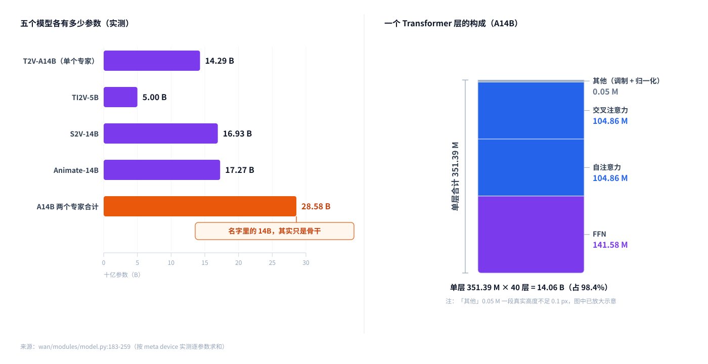
图 7｜参数分布 —— 看这里：左边五根柱子是各模型总参数量（T2V-A14B 14.29B、TI2V-5B 5.00B、S2V-14B 16.93B、Animate-14B 17.27B）；右边是 A14B 单层的构成——自注意力、交叉注意力、FFN 三块几乎三等分，FFN 最大。调模型的"大小旋钮"其实只有三个：层数 40、宽度 5120、头数 40。
显存下限（bf16 权重）：
- A14B 两个专家同时常驻 = 53.23 GiB → 单卡必须 ≥ 80GB（或开
--offload_model True） - TI2V-5B：单卡 24GB（RTX 4090 即可）
- 激活显存随序列长度平方增长：720p/81 帧时 S=75,600，单层注意力矩阵
75600² × 2 bytes ≈ 10.9 GiB（FlashAttention 不物化它，但 QKV/激活仍是主要开销）→ 降分辨率/降帧数比降其他开关更有效
多卡：FSDP + DeepSpeed-Ulysses 序列并行（wan/distributed/）。--ulysses_size 必须等于 world_size，且 num_heads % ulysses_size == 0。
九、配置：本仓库一个 YAML 都没有
傻瓜层： 别去找 yaml。这里的配置全是 Python 写的对象，改配置就改代码。
技术版 / Technical
git ls-files | grep -E '\.ya?ml$'→ 零命中。所有"配置"都是wan/configs/*.py里的EasyDict。
wan/configs/shared_config.py（共享）：t5_model='umt5_xxl'、t5_cpu=False、t5_fsdp=False、convert_model_dtype=False、offload_model=False（多卡时为 False，单卡默认 True）。
wan/configs/__init__.py 注册表：WAN_CONFIGS 把 task 名映射到配置类；SUPPORTED_SIZES 给出每个任务允许的尺寸：
| task | 允许尺寸 |
|---|---|
t2v-A14B |
1280*720、720*1280、832*480、480*832 |
i2v-A14B |
同上 |
ti2v-5B |
仅 1280*704、704*1280 |
s2v-14B |
8 种尺寸（480P/720P/1024×704 等） |
animate-14B |
1280*720、720*1280 |
关键配置键（各任务 config 汇总）：
| 键 | 默认 | 作用 |
|---|---|---|
frame_num |
81（A14B）/ 121（5B）/ 77（Animate） | 输出帧数，须 4n+1 |
sample_steps |
40 / 50 / 20 | 去噪步数 |
sample_shift |
12.0 / 5.0 / 3.0 / 5.0 | 调度器 shift，决定专家切分点 |
sample_guide_scale |
(3.0, 4.0) / (3.5,3.5) / 5.0 / 4.5 / 1.0 | CFG，(低噪, 高噪) |
boundary |
0.875 / 0.900 | 专家切换阈值 ×1000 |
vae_stride |
(4,8,8) / (4,16,16) | VAE 压缩比 |
patch_size |
(1,2,2) | DiT patch |
dim / ffn_dim / num_heads / num_layers |
5120/13824/40/40；3072/14336/24/30 | 主干尺寸 |
in_dim / out_dim |
16/16（T2V）、36/16（I2V、Animate）、48/48（5B） | 输入输出通道 |
sample_fps |
16 / 24（5B）/ 30（Animate） | 输出帧率 |
text_len |
512 | T5 上下文长度 |
window_size |
(-1,-1) |
全部为全局注意力 |
CLI 参数（generate.py）：--task、--size、--sample_steps、--sample_shift、--sample_guide_scale、--frame_num、--image、--audio、--base_seed、--offload_model、--convert_model_dtype、--t5_cpu、--t5_fsdp、--ulysses_size、--num_clip、--infer_frames、--refert_num、--replace_flag、--use_relighting_lora 等。
十、训练：本仓库零训练代码
傻瓜层： 这里只有"怎么用"，没有"怎么训"。训练在别的仓库/框架里。
技术版 / Technical
- 仓库里没有 optimizer、dataset、trainer、loss（
grep零命中）；Makefile只有format一条目标 - README 声称 Wan2.2 相比 Wan2.1 "+65.6% more images and +83.2% more videos"（数据规模），但仓库内无数据支撑代码
- 训练实现指向第三方（DiffSynth-Studio 等），论文 arXiv 2503.20314
- 仓库里没有 LoRA 训练脚本、没有量化脚本、没有 TensorRT/ONNX 导出
十一、怎么跑
# 依赖：torch >= 2.4.0；flash_attn 最后装（README 提示）
pip install -r requirements.txt
# flash-attn PEP 517 报错时：
pip install git+https://github.com/Dao-AILab/flash-attention.git
# 权重（两个专家目录都要下）
huggingface-cli download Wan-AI/Wan2.2-T2V-A14B --local-dir ./Wan2.2-T2V-A14B
# 单卡
python generate.py --task t2v-A14B --size 1280*720 --frame_num 81 \
--ckpt_dir ./Wan2.2-T2V-A14B --prompt "…" --sample_steps 40 --sample_shift 12.0 \
--sample_guide_scale 3.0 4.0 --offload_model True --convert_model_dtype --t5_cpu
# 5B：单卡 24GB 即可，但分辨率是 1280*704
python generate.py --task ti2v-5B --size 1280*704 --frame_num 121 --ckpt_dir ./Wan2.2-TI2V-5B --prompt "…"
# 多卡（FSDP + DeepSpeed Ulysses）
torchrun --nproc_per_node 8 generate.py --task t2v-A14B --size 1280*720 \
--ckpt_dir ./Wan2.2-T2V-A14B --prompt "…" --ulysses_size 8 --t5_fsdp
# Wan-Animate 是两步：先预处理（出 src_pose.mp4 / src_face.mp4 / src_ref.png），再推理
README 提到的第三方集成（本仓库无对应代码）：ComfyUI、Diffusers、vLLM、SGLang、EasyAnimate 等。
九、仓库自带的原图与厂商给出的数据
傻瓜层： 这个仓库还附了四张"说明图"。它们是官方自己画的架构图、自己跑出来的对比表——看这些图比读代码更快理解设计意图，但里面的数字都是厂商自测口径。
技术版 / Technical
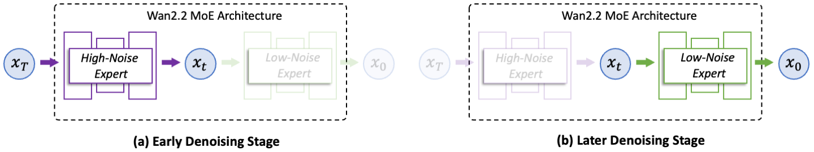
图 8｜官方 MoE 架构示意 —— 看这里：左边 (a) Early Denoising Stage 高亮 High-Noise Expert（淡出 Low-Noise），右边 (b) Later Denoising Stage 高亮 Low-Noise Expert。这正是前面那个"整模型换班"的官方画法。
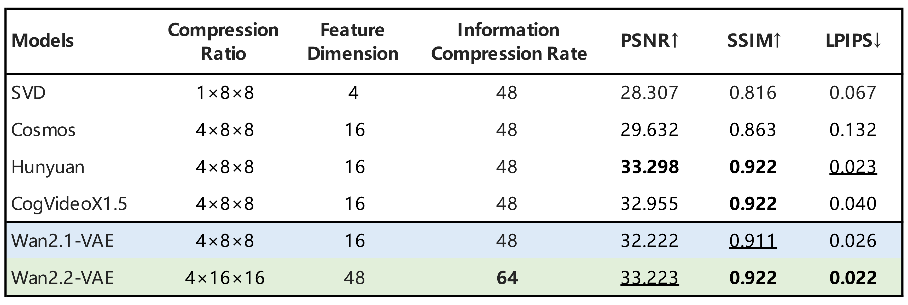
图 9｜VAE 重建质量对比（原表） —— 看这里：Wan2.2-VAE 是唯一把信息压缩率提到 64 的那一行（4×16×16、48 维），而它的 PSNR/SSIM/LPIPS 还都不输于别人的 48 倍压缩。
| 模型 | 压缩比 | 特征维度 | 信息压缩率 | PSNR ↑ | SSIM ↑ | LPIPS ↓ |
|---|---|---|---|---|---|---|
| SVD | 1×8×8 | 4 | 48 | 28.307 | 0.816 | 0.067 |
| Cosmos | 4×8×8 | 16 | 48 | 29.632 | 0.863 | 0.132 |
| Hunyuan | 4×8×8 | 16 | 48 | 33.298 | 0.922 | 0.023 |
| CogVideoX1.5 | 4×8×8 | 16 | 48 | 32.955 | 0.922 | 0.040 |
| Wan2.1-VAE | 4×8×8 | 16 | 48 | 32.222 | 0.911 | 0.026 |
| Wan2.2-VAE | 4×16×16 | 48 | 64 | 33.223 | 0.922 | 0.022 |
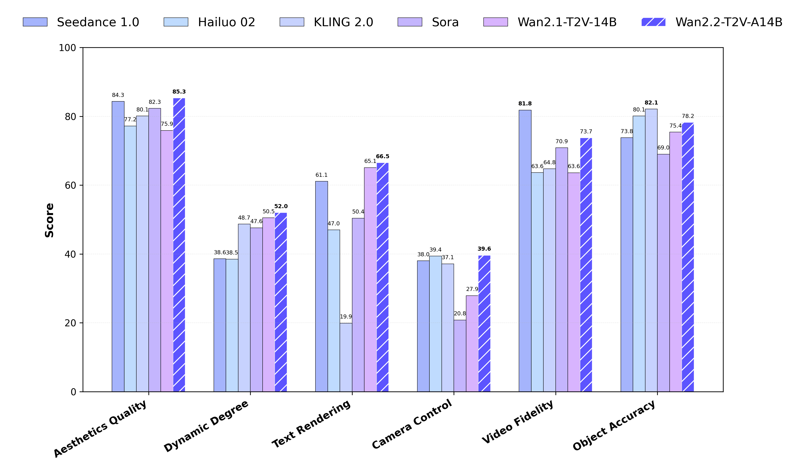
图 10｜六个维度的打分对比（原图） —— 看这里：带斜线的深蓝柱是 Wan2.2-T2V-A14B。它在「美学质量 85.3」上超过 Seedance 1.0（84.3）与 Wan2.1-T2V-14B（75.9），在「相机控制 39.6」上也是六家里最高之一；但「动态程度 52.0」只排在中游。
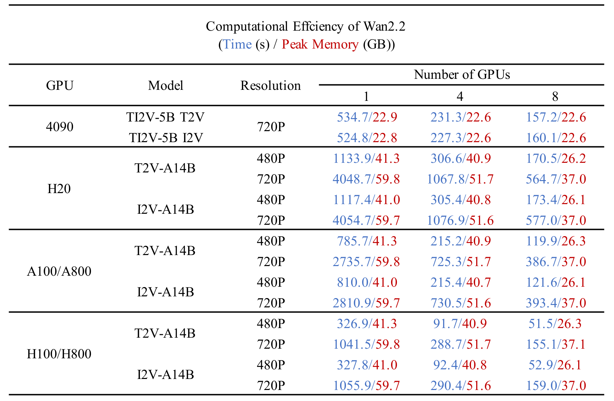
图 11｜耗时（秒）/ 峰值显存（GB）表（原图） —— 看这里：H100/H800 上 T2V-A14B 720P 单卡 1041.5 秒 / 59.8 GB，8 卡降到 155.1 秒 / 37.1 GB；而 4090 上 TI2V-5B 720P 单卡 534.7 秒 / 22.9 GB——这就是 5B 版本"RTX 4090 就能跑"的来源。
原表全量数据（assets/comp_effic.png，单位：秒 / GB）：
| GPU | 模型 | 分辨率 | 1 卡 | 4 卡 | 8 卡 |
|---|---|---|---|---|---|
| 4090 | TI2V-5B T2V | 720P | 534.7 / 22.9 | 231.3 / 22.6 | 157.2 / 22.6 |
| 4090 | TI2V-5B I2V | 720P | 524.8 / 22.8 | 227.3 / 22.6 | 160.1 / 22.6 |
| H20 | T2V-A14B | 480P | 1133.9 / 41.3 | 306.6 / 40.9 | 170.5 / 26.2 |
| H20 | T2V-A14B | 720P | 4048.7 / 59.8 | 1067.8 / 51.7 | 564.7 / 37.0 |
| H20 | I2V-A14B | 480P | 1117.4 / 41.0 | 305.4 / 40.8 | 173.4 / 26.1 |
| H20 | I2V-A14B | 720P | 4054.7 / 59.7 | 1076.9 / 51.6 | 577.0 / 37.0 |
| A100/A800 | T2V-A14B | 480P | 785.7 / 41.3 | 215.2 / 40.9 | 119.9 / 26.3 |
| A100/A800 | T2V-A14B | 720P | 2735.7 / 59.8 | 725.3 / 51.7 | 386.7 / 37.0 |
| A100/A800 | I2V-A14B | 480P | 810.0 / 41.0 | 215.4 / 40.7 | 121.6 / 26.1 |
| A100/A800 | I2V-A14B | 720P | 2810.9 / 59.7 | 730.5 / 51.6 | 393.4 / 37.0 |
| H100/H800 | T2V-A14B | 480P | 326.9 / 41.3 | 91.7 / 40.9 | 51.5 / 26.3 |
| H100/H800 | T2V-A14B | 720P | 1041.5 / 59.8 | 288.7 / 51.7 | 155.1 / 37.1 |
| H100/H800 | I2V-A14B | 480P | 327.8 / 41.0 | 92.4 / 40.8 | 52.9 / 26.1 |
| H100/H800 | I2V-A14B | 720P | 1055.9 / 59.7 | 290.4 / 51.6 | 159.0 / 37.0 |
以上四张图与两张表均取自仓库
assets/目录的原文件，未做任何修改；其中的分数与耗时是厂商自测口径，本报告未在本机复现（本机无 CUDA）。
为什么 / 坑 — Why & pitfalls
- "MoE" 两个字会骗人。没有 router、没有 token 路由、没有稀疏激活：两份完整 40 层权重，按 timestep 阈值整网替换，还伴随 CPU↔GPU 搬运。单卡场景 T2V 要搬 26 次。README 的 SNR 阈值说法在代码里被简化成
t ≥ 875硬阈值。 - 步数分配和流传的说法不一样。实测 T2V-A14B 是 26 高噪 + 14 低噪，I2V-A14B 是 15 + 25——shift 越大切得越早（12.0 → 早切；5.0 → 晚切）。别把"50 步高噪 + 10 步低噪"当既定事实。
- 图生视频不用 CLIP。A14B-I2V 是 36 通道拼通道（噪声 16 + mask 4 + 首帧 16）；CLIP 只服务于 Animate。
- 名字里的 14B 不等于 14B。Animate 实测 17.27B、S2V 实测 16.93B；A14B 双专家合计 28.58B，而 README 说 27B。
- ⚠️ TI2V-5B 的 I2V 路径 timestep 恒为 0（疑似 bug）：
textimage2video.py的 I2V 分支用masks_like(..., zero=True)，置零的是通道 0，而mask2[0][0]取的正是通道 0 ⇒temp_ts全 0，DiT 每步都收到t=0；同文件 t2v 分支用zero=False则正常。【逐行推导，未实机复现】 - ⚠️ CLI 的
--refert_num默认 77 会直接崩：animate.py:351断言只接受 1 或 5，不显式传参会 AssertionError；且 Animate 函数默认 solver 是dpm++，而 CLI 默认unipc。 - ⚠️ CPU 上连 import 都会崩：
wan/modules/t5.py:478把torch.cuda.current_device()写成函数定义时求值的默认参数 → 无 CUDA 的机器上import wan.modules.t5直接抛异常。本仓库不支持 CPU 推理。 - head_dim 必须 ≤ 256 且必须在 CUDA（
attention.py:54的断言）；主干不会走 SDPA 兜底。 - 仓库没有 fp8、没有 SageAttention、没有 VAE 空间 tiling（
grep -i sage|fp8在wan/内零命中）。想省显存只能靠offload_model、降分辨率、降帧数。 transformers版本两个文件不一致：requirements.txt:6钉<=4.51.3，pyproject.toml:20只写>=4.49.0→ 用 pip 装 requirements 更严格。--t5_cpu与--t5_fsdp互斥；--convert_model_dtype只在非 FSDP 时生效（text2video.py:162-165），多卡下要靠 FSDP MixedPrecision。- 尺寸约束很硬：
ti2v-5B没有 1280×720（只有 1280×704）；帧数必须 4n+1；I2V/TI2V-I2V 的--size表示面积而非宽高，实际宽高随输入图比例变；5B 的 I2V 还要求宽高是 32 的倍数。 - T5 只有 512 token，超长 prompt 被静默截断——这正是 prompt 扩展功能存在的原因。
- S2V 的音频长度决定视频长度，最终 mp4 时长取音频与视频较短者（ffmpeg
-shortest）。 - A14B 必须把两个专家都下下来，少任何一个都会在加载时失败。
未验证 · 风险 · 待定 — Unverified · risks · open
- 各 checkpoint 的
config.json未验证：仓库不含权重，in_dim/out_dim等由代码路径推导（T2V=16/16、I2V 与 Animate=36/16、TI2V=48/48），未经权重核对。 - README 的 "27B 总参数" 与推导的 28.58B 不符，差异原因未知。
- 所有速度/显存数字都来自仓库里的图（
assets/comp_effic.png、assets/performance.png），未在本机复现（本机无 CUDA、torch 为 CPU 版）。 - VAE 重建质量指标（PSNR/SSIM/LPIPS）来自
assets/vae.png，未复现。 - TI2V-5B I2V 路径 timestep 恒 0 的疑似 bug 是逐行推导，未实机跑。
- S2V 的 16,925,024,089 里
AdaLayerNorm用了等价 stub，若真实 diffusers 版本结构不同会有偏差。 - 发布/更新日期来自 README 文字，本地是 shallow clone（仅 1 个 commit），无法交叉验证。
- README 提到的其他仓库与集成（ComfyUI、Diffusers、vLLM、SGLang）只有链接，本仓库无代码。
- 无训练细节、无数据规模证据、无量化脚本、无导出脚本。
- 风险：参数量是 meta device 实测（可靠），但性能结论依赖厂商图表；单卡跑 A14B 需要 80GB 显存，且每次专家切换都要搬运权重。
来源 / Sources
仓库
- URL：https://github.com/Wan-Video/Wan2.2
- 分支：
main；HEAD1ea34ff48f87168174e12956e200b1d908b1c5ff（2026-09-21 14:16:22 +0800） - 提交总数：1（shallow clone）；License：Apache 2.0（
LICENSE.txt） - 论文：arXiv 2503.20314；训练实现见 DiffSynth-Studio 等第三方
- 本地路径：
Wan2.2/（临时目录）
关键文件
wan/modules/model.py（DiT 主干）、wan/modules/vae2_1.py / vae2_2.py（两套 VAE）、wan/modules/attention.py（FlashAttention）、wan/modules/t5.py（umT5-XXL）、wan/text2video.py（MoE 切换与主循环）、wan/image2video.py、wan/textimage2video.py、wan/speech2video.py、wan/animate.py、wan/configs/*.py、wan/distributed/、generate.py
执行过的命令（可复现）
git -C Wan2.2/ log -1 --format='%H %ci %s'
git -C Wan2.2/ ls-files | wc -l # 87
git -C Wan2.2/ ls-files '*.py' | xargs wc -l | tail # 19,138 行
git -C Wan2.2/ ls-files | grep -E '\.ya?ml$' # 零命中
git -C Wan2.2/ grep -i -e sage -e fp8 -- wan/ # 零命中
# 参数量：把源码 import 到 torch.device('meta')，逐参数 numel() 求和（torch 2.13.0）
时间：全部调研于 2026-11-08（Asia/Shanghai）离线完成；未访问网络。